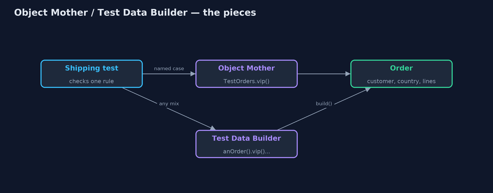
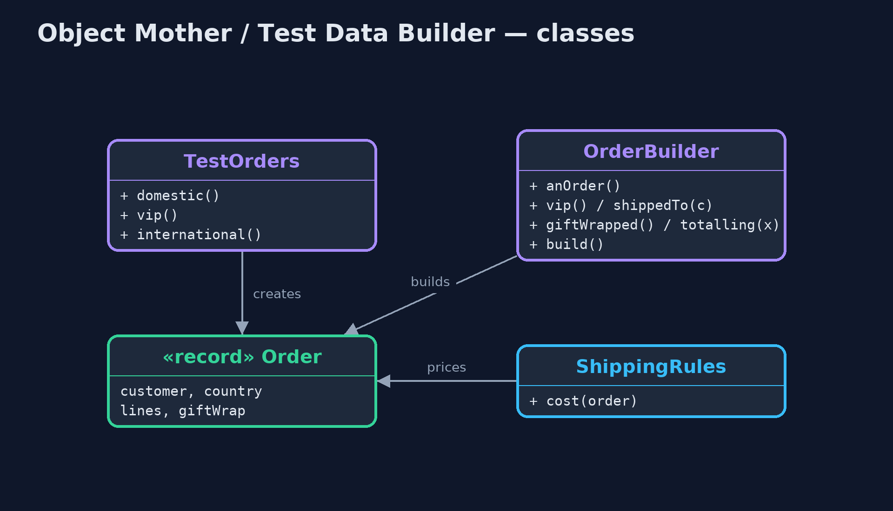
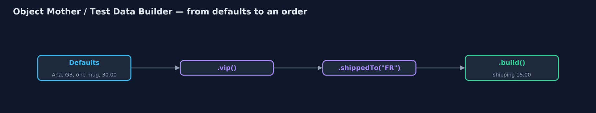
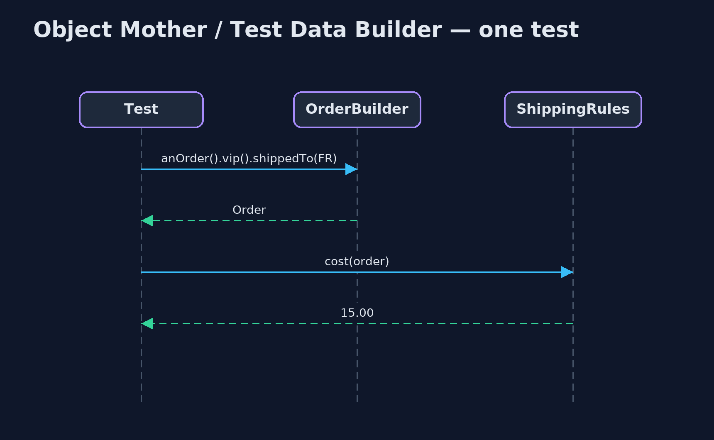

Object Mother / Test Data Builder Pattern
src/main/java/com/jk/explore/objectmother/
├── Customer.java A customer of the online store
├── Line.java One line of an order: a product, how many, and the price of each
├── ObjectMotherDemo.java The five acts: hand-built test data, an Object Mother, the mother's explosion, a Test Data Builder, and the bill
├── Order.java An order, with everything the constructor insists on
├── OrderBuilder.java The Test Data Builder: sensible defaults for everything, and a method for each detail a test cares about
├── ShippingRules.java The code under test: UK orders over 50 ship free, VIPs always ship free in the UK, other UK orders pay 4.99, and orders abroad pay 15.00
└── TestOrders.java The Object Mother: named, ready-made orders for testsGive tests ready-made, named test objects (an Object Mother), or a builder with sensible defaults where each test states only the details it cares about (a Test Data Builder).
Object Mother and Test Data Builder are two patterns for creating the objects tests need. Real objects often demand many values before they can exist: an order needs a customer, a country, lines, and options. When every test builds them by hand, the tests are long, the important detail is lost among the unimportant ones, and one new constructor argument breaks every test.
An Object Mother is a class of named, ready-made objects: TestOrders.vip(), TestOrders.international(). A Test Data Builder starts from sensible defaults and lets each test change only what it cares about: anOrder().vip().shippedTo("FR").build(). Many teams use both.
The idea in everyday terms
Think of a restaurant kitchen. The chef does not start every dish from a raw sack of flour; there is a shelf of ready-made bases, stocks and sauces. That shelf is the Object Mother. But when a customer asks for "the usual, no onions, extra cheese", the cook starts from the usual and changes just those two things. That is the builder.
The scenario
The online store's shipping rules are tested with many small tests. Each test built its order by hand: three constructors and eight values, just to check one rule. Reading a test, nobody could tell which of those eight values mattered, and when the customer gained a new field, every one of those tests had to be edited.
Run
./gradlew runThe demo tells the story in 5 acts, each printing exact numbers that the tests check:
| Act | What it shows |
|---|---|
| 1. Built by hand | Each test builds its order with 3 constructors and 8 values to check one rule; the reader cannot tell which values matter. |
| 2. An Object Mother | TestOrders.domestic(), vip() and international(): shipping 4.99, 0.00 and 15.00, one line per test, and one place to change. |
| 3. The mother multiplies | 3 yes-or-no details need 8 mother methods to cover every mix, such as vipInternationalGiftWrapped(); one more makes 16. |
| 4. A Test Data Builder | anOrder().vip().shippedTo("FR").build() pays 15.00; anOrder().vip().giftWrapped().build() pays 2.00: any mix in one line. |
| 5. The bill | A free-shipping test relied on a default price of 60; when the default fell to 30 it paid 4.99 and failed with no visible reason. |
Test
./gradlew test7 tests in DemoRunsTest, ShippingRulesTest. Every number the demo prints is asserted, and nothing depends on the clock, so every run gives the same result.
Technologies and versions
| Technology | Version | Used for |
|---|---|---|
| Java | 21 | the code (toolchain set in build.gradle) |
| Gradle | 9.2.1 (wrapper) | build and run, nothing to install |
| JUnit | 5.10.2 | the tests |
| videokit | repository tool | the narrated video and animation: Piper en_US-amy-medium, speed 0.8, longer pauses (the approved amy-slow voice) |
Learning Material
| Document | What it is for |
|---|---|
| Problem statement | the situation and what the project must show |
| Prerequisites | what you need to know first |
| Object Mother / Test Data Builder, explained | the acts in prose |
| Session guide | a one-hour lesson with exercises |
| Animated walkthrough | the acts step by step, narrated |
| Spec | what this project must be true of |
The pattern in one picture
Two ways for a test to get its order.

Where each piece sits
Both hide the constructors from the tests.

How the data moves
Only the details that matter are named.

Who calls whom, in order
Build, price, check.

Video
video/object-mother-pattern-explained.mp4 (with .m4a audio and .srt subtitles) is built by video/build_video.sh. Rendered media is not committed.
What it costs
- Hidden defaults. A test that relied on the builder's default price broke, with no visible reason, when someone changed that default.
- Mothers multiply. Every mix of details needs its own mother method: three yes-or-no details already mean eight methods.
- More test code to maintain. The mother and the builder are code too, and must keep up with the domain.
When this is too much
When objects are small, with two or three fields, building them in the test is clearer than calling a helper. These patterns pay off when objects need many values and many tests need slightly different versions of them.
Where you have already met this
- Builders generated by Lombok's
@Builder, or written by hand insrc/test. - Fixture factories such as Instancio or Java Faker helpers.
- Ruby's factory_bot and Python's factory_boy, the same idea in other languages.
Where this sits
This project is in testing-design-patterns, next to Test Double, which fakes the objects a test talks to, where this one builds the objects a test passes in.